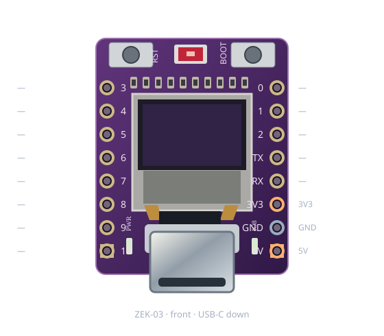

Board identification and evidence

| Position from top | Left | Right |
|---|---|---|
| 1 | GPIO3 | GPIO0 |
| 2 | GPIO4 | GPIO1 |
| 3 | GPIO5 | GPIO2 |
| 4 | GPIO6 | TX / GPIO21* |
| 5 | GPIO7 | RX / GPIO20* |
| 6 | GPIO8 | 3V3 |
| 7 | GPIO9 | GND |
| 8 | GPIO10 | 5V |
* Numeric UART aliases use project test evidence, not a located Zepkvor schematic.
Read the drawing in the correct orientation
Look at the front, with the OLED facing you and USB-C downward. The purple rectangular PCB has eight through-hole header positions per side, RST at top-left and BOOT at top-right. The display occupies the upper-middle area; the USB-C shell projects below the PCB. The drawing includes the central top component, display flex area, small components, power indicator and IO8 user-LED markings visible in the photograph.
The supplied photograph is the authority for physical label order. From top to bottom, the left side is 3, 4, 5, 6, 7, 8, 9, 10. The right side is 0, 1, 2, TX, RX, 3V3, GND, 5V. The view is not mirrored. Digital GPIO numbers and rail names are stored separately so the renderer cannot accidentally turn 3V3 or 5V into live GPIO channels.
TX and RX evidence
The current project receives readable GPS NMEA when GPS TXD is connected to the board RX-labelled header and the ESP32 UART listens on GPIO20 at 9600 baud. The project transmits on GPIO21 through the TX-labelled header. Espressif Arduino-ESP32 3.3.12 also defines the generic C3 TX/RX aliases as 21/20. Together these support the operational mapping used here.
A generic core alias alone does not prove a vendor header trace. No authoritative Zepkvor ZEK-03 schematic was found during this work. The board metadata explicitly describes TX=21 and RX=20 as project wiring/test evidence rather than manufacturer certification. If a different physical revision fails the same test, check its traces or obtain its exact schematic before changing the mapping.
OLED internals: verified versus unknown
The listing and supplied product description identify a 0.42-inch integrated OLED. The photograph establishes its placement, not its controller or pixel matrix. For this exact ZEK-03, controller model, resolution, I2C SDA, I2C SCL, I2C address and shared external-header wiring are all recorded as unknown (null) in board.json.
A separate maintainer project documents GPIO5/6 OLED I2C on a similar mini C3 OLED board and explicitly warns that SPI and OLED I2C can conflict. That is useful research evidence for a hypothesis, not proof that the ZEK-03 is electrically identical. The current Mzansi radio already uses GPIO5 as MISO and GPIO6 as MOSI. Do not run an I2C scan or initialize a guessed display configuration over those active radio pins.
To resolve the uncertainty, obtain a schematic explicitly naming ZEK-03 and its revision, inspect continuity on an unpowered board with attached modules disconnected, then test an isolated display sketch using the verified pins. An I2C acknowledgement can establish that something responds at an address; it does not by itself identify the controller or pixel resolution. Update the metadata only with the resulting evidence.
Electrical and capability notes
ESP32-C3 GPIO uses 3.3 V logic. The 5V header is a supply rail, not permission to drive a GPIO with 5 V. Power and ground entries in this viewer do not measure their voltage. Use an appropriate meter for supply checks. The nRF24 PA/LNA needs a stable regulated 3.3 V supply, shared ground and local decoupling; digital activity alone does not establish adequate power.
GPIO2, GPIO8 and GPIO9 are C3 strapping pins, sampled during reset. External loads must preserve valid boot levels. GPIO0-4 have ADC1 capability; GPIO5 is associated with ADC2 and C3-specific restrictions. Capability hints describe silicon facilities, not a guarantee that the current application has configured or can safely repurpose that function. The viewer does not offer output toggles.